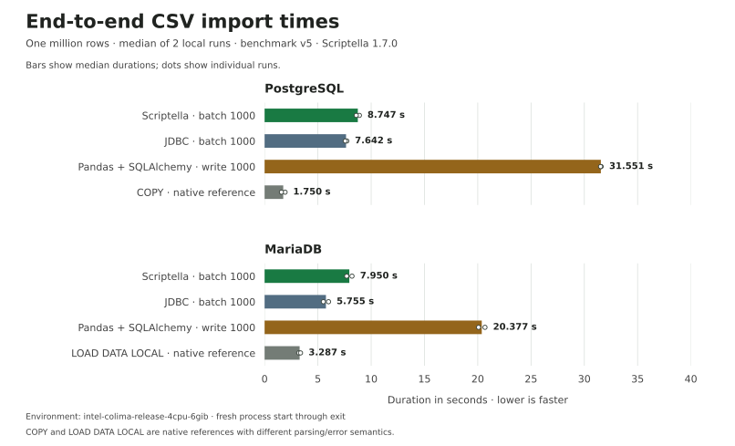

CSV import benchmarks
One million CSV rows imported in 8.747 seconds on PostgreSQL and 7.950 seconds on MariaDB with Scriptella 1.7.0.
Handwritten JDBC was faster, at 7.642 and 5.755 seconds. Pandas took 31.551 and 20.377 seconds. PostgreSQL COPY took 1.750 seconds, and MariaDB LOAD DATA LOCAL took 3.287 seconds.
Benchmark results
Benchmark v5: median of two runs on 2026-11-03, Intel Mac, Colima x86_64 with 4 CPUs and 6 GiB. Lower is faster.

| Database | Scriptella 1.7.0 | JDBC | Pandas | Native reference |
|---|---|---|---|---|
| PostgreSQL | 8.747 s | 7.642 s | 31.551 s | COPY: 1.750 s |
| MariaDB | 7.950 s | 5.755 s | 20.377 s | LOAD DATA LOCAL: 3.287 s |
Same million-row CSV, pre-created tables, one transaction per import, no indexes or transformations. Timings include client startup, CSV parsing, insertion, and commit; setup and verification are excluded. Scriptella and JDBC use batch size 1000. PostgreSQL batch rewriting is enabled for both; MariaDB uses driver defaults. Pandas reads 10,000-row chunks and writes 1,000-row chunks. Values are medians of two runs. Results depend on workload and environment. COPY and LOAD DATA LOCAL are database-specific references with different parsing and error semantics.
See the benchmarks repository for full results and environment details, methodology, and instructions to reproduce the comparison.
For tuning advice, see the batching and insert performance guide.
Further reading: Importing a million CSV rows and how PostgreSQL batch rewriting improved import performance on PVR Labs.